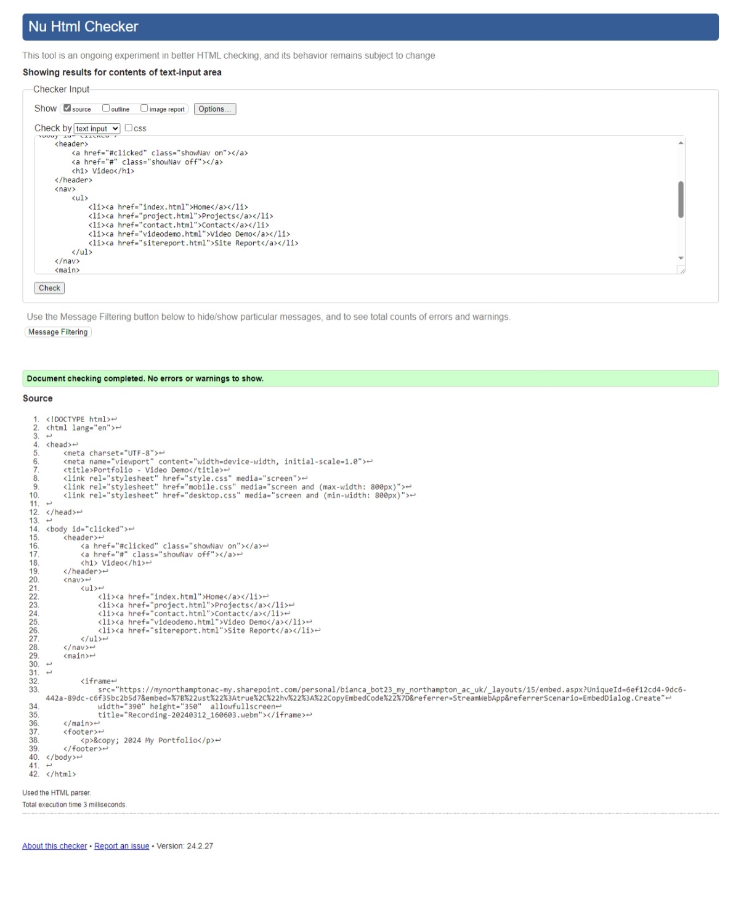
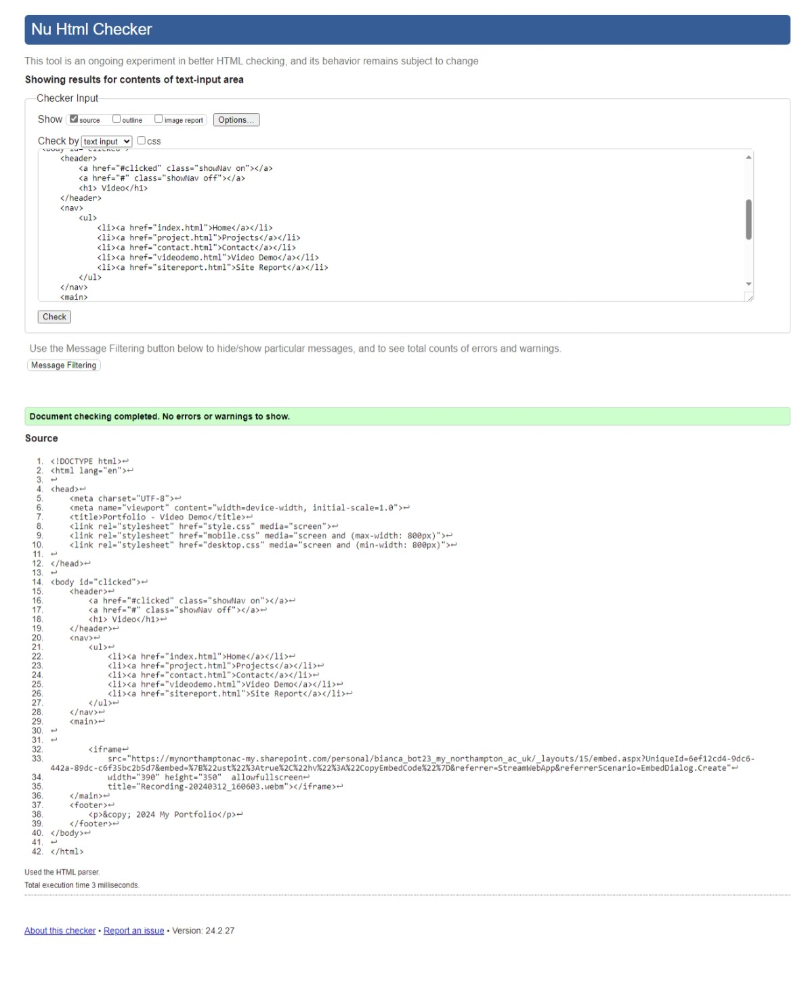

Site report
Reflective Discussion of Module Experience:
Throughout this module, I embarked on an enlightening journey into the fundamentals of web development. Initially, I approached this subject with a mixture of curiosity and trepidation, as I had limited prior experience in coding and design. However, as the weeks progressed, I found myself increasingly immersed in the intricacies of HTML and CSS, gradually building my skills and confidence.
Learning the basics of web development was both challenging and rewarding. I appreciated the structured approach of the course, which provided clear explanations and hands-on exercises to reinforce key concepts. Through practice and experimentation, I gained a solid understanding of HTML tags, CSS selectors, and the principles of responsive design.
In terms of design decisions for my website, I aimed for a clean and minimalist aesthetic that prioritized usability and readability. When selecting fonts and colors, I conducted research into typography and color theory to ensure coherence and harmony. Ultimately, I opted for a sans-serif font for its modern appeal and readability across devices, complemented by a muted color palette that conveyed professionalism and sophistication.
Several sources influenced my website's design, including online tutorials, design blogs, and examples of well-executed websites. I drew inspiration from minimalist design principles espoused by renowned designers and sought to incorporate best practices in layout and navigation.
Validation Screenshots:
Attached are screenshots of validation reports confirming the compliance of my website's HTML and CSS with W3C standards. These reports provide tangible evidence of the adherence to industry best practices in web development.
 
